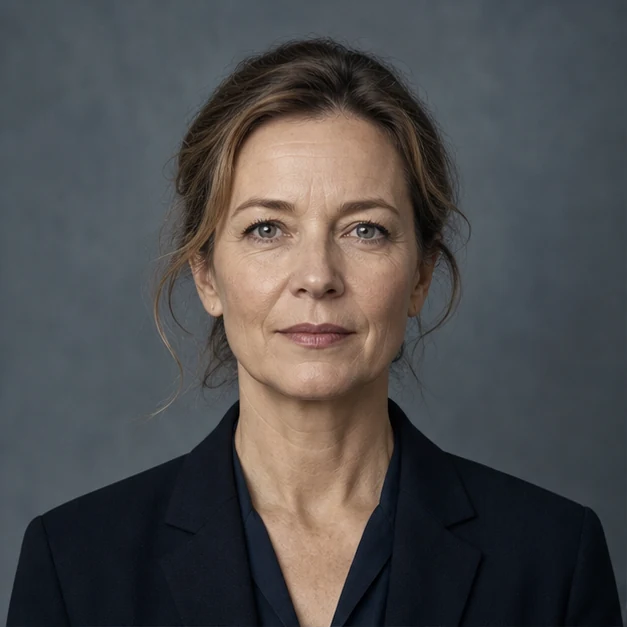
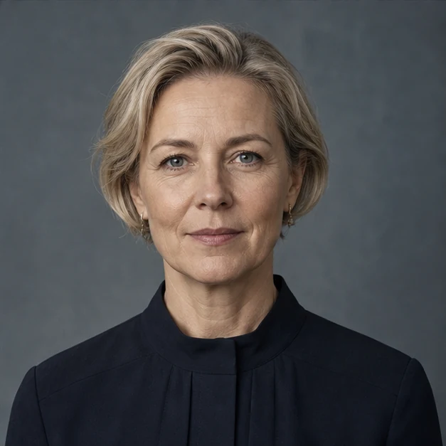

Alma Nord
Professor i astrofysik, tidigare vicerektor och mångårig ledare för internationella forskningssamarbeten.
För kunskapens plats i samhället
Vi samlar forskare, folkbildare, offentliga personer och samhällsbärare för att stärka evidens, öppen prövning och intellektuellt mod i svensk offentlighet.
Läs vårt manifestVi försvarar inte varje påstående som görs i vetenskapens namn. Vi försvarar processen som skiljer det vi tror från det vi faktiskt vet.
02 Manifest
Fakta blir inte mindre sanna för att de är obekväma. Kunskap måste få stå fri från opinionens korta cykler.
Vi försvarar rätten att ändra uppfattning när evidensen kräver det — och skyldigheten att visa hur vi vet.
Transparenta metoder, redovisade osäkerheter och tillgängliga resultat gör vetenskapen starkare.
Saklig prövning är inte ett angrepp. Den är kunskapens viktigaste kvalitetssäkring.
Politik väljer mål. Vetenskapen måste få klargöra konsekvenserna, utan att förenklas till slagord.
Vi värnar den fria frågan, det oväntade resultatet och modet att säga: det vet vi ännu inte.
Vår utgångspunkt
I en tid av snabba svar väljer vi den långsamma prövningen. Inte för att tvekan är ett mål — utan för att tillit måste förtjänas.
Nyfikenhet utan godtrogenhet.
Övertygelse utan dogmatism.
03 Signatärer

Professor i astrofysik, tidigare vicerektor och mångårig ledare för internationella forskningssamarbeten.

Epidemiolog och vetenskaplig rådgivare med tre decennier inom folkhälsa och evidensbaserad policy.

Professor i teknikhistoria och prisbelönt folkbildare i frågor om innovation, risk och samhällsansvar.

Molekylärbiolog och akademiledamot med lång erfarenhet av forskningsetik och öppen vetenskap.
Samtalet börjar här
Vill du bidra, samarbeta eller bjuda in signatärerna till ett offentligt samtal?
Skriv till oss